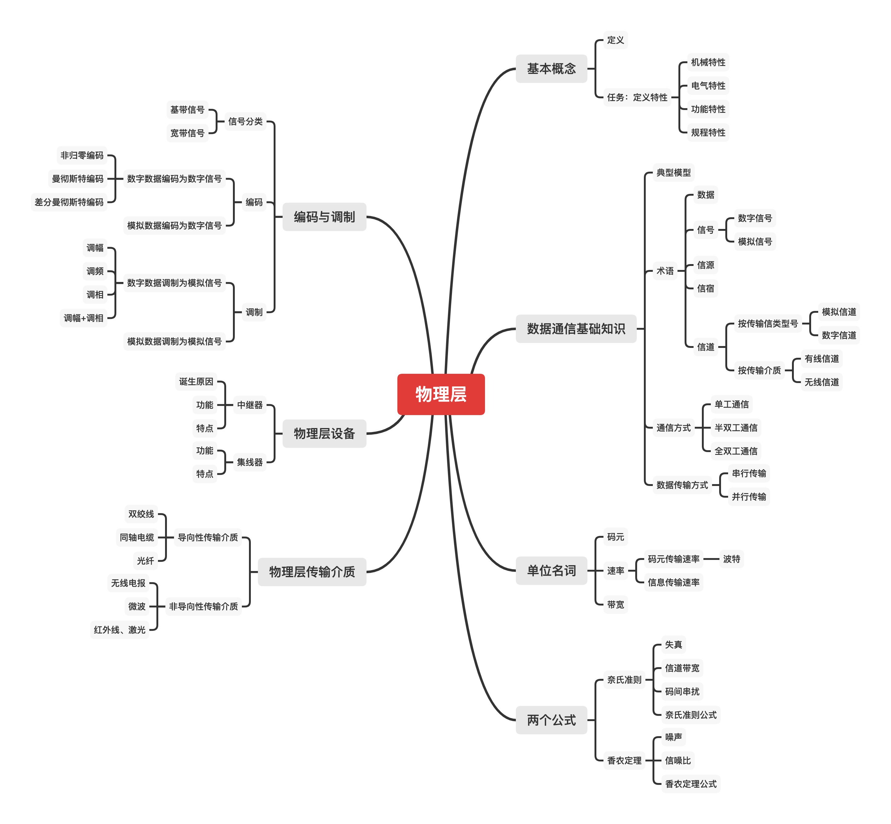
1 基本概念
物理层解决如何在连接各种计算机的传输媒体上传输数据比特流，而不指具体的传输媒体。
主要任务：确定与传输媒体接口有关的一些特性——定义标准。
- 机械特性：定义物理连接的特性。比如物理连接时采用的规格、接口形状、引线数目、引脚数量和排列情况。
- 电气特性：规定传输二进制位时，线路上信号的电压范围、阻抗匹配、传输速率和距离限制等。
- 功能特性：指明某条线上出现的某一电平表示何种意义，接口部件的信号线的用途。
- 规程特性：定义各条物理线路的工作规程和时序关系。
2 数据通信基础知识
典型数据通信模型：
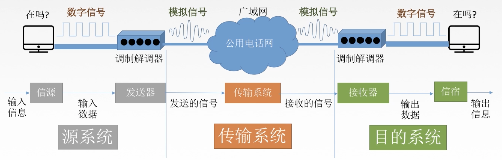
电话式入网需要猫，宽带式入网不需要猫。
通信的目的是传送消息。
数据：传送信息的实体，通常是有意义的符号序列。
信号：数据的电气/电磁的表现，是数据在传输过程中的存在形式。

信源：产生和发送数据的源头。
信宿：接收数据的终点。
信道：信号的传输媒介。一般用来表示某一个方向传送信息的介质，因此一条通信线路往往包含一条发送信道和一条接收信道。
- 按传输信号：模拟信道（传送模拟信号），数字信道（传送数字信号）
- 按传输介质：无线信道，有线信道
三种通信方式：
- 单工通信：只有一个方向的通信而没有反方向的交互，仅需要一条信道。
- 半双工通信：通信双方都可以发送或接收消息，但任何一方不能同时发送和接收，需要两条信道。
- 全双工通信：通信双方可以同时和接收消息，需要两条信道。
两种数据传输方式：
- 串行传输：速度慢，费用低，适合远距离
- 并行传输：速度快，费用高，适合近距离
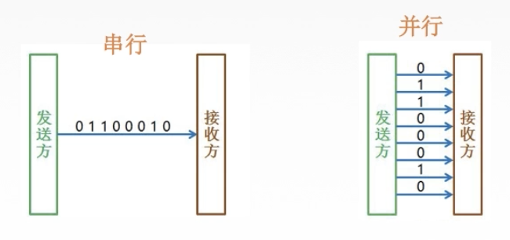
3 单位名词
3.1 码元
码元是一个固定时长的信号波形（数字脉冲），代表不同离散数值的基本波形，是数字通信中数字信号的计量单位，这个时长内的信号称为K进制码元，该时长称为码元宽度。当码元的离散状态有M个时（M大于2），此时码元为M进制码元。
一个码元可以携带多个比特的信息量。比如二进制码元，只有两种不同的码元，一种代表0状态，一种代表1状态。
3.2 速率、波特、带宽
速率也叫数据率，指数据的传输速率，表示单位时间内传输的数据量。可以用码元传输速率和信息传输速率表示。
- 码元传输速率：码元速率，波形速率，调制速率，符号速率。单位时间内数字通信系统所传输的码元个数（脉冲个数或信号变化个数）。单位是波特（Baud）。1波特即数字通信系统每秒传输一个码元，码元可以是多进制或二进制，码元速率与进制数无关。
- 信息传输速率：信息速率，比特率。单位时间内数字通信系统传输的二进制码元个数（比特数）。单位是比特/秒，b/s。
若一个码元携带n bit信息量，则M Baud的码元传输速率对应的信息传输速率为M * n bit/s。例如一个4进制码元可携带2 bit信息量（1个4进制位需要2个bit），所以对应为2M b/s。
带宽：单位时间内从网络中某一点到另一点所能通过的最高数据率，表示网络通信线路传输数据的能力。单位是b/s。
4 奈氏准则和香农定理
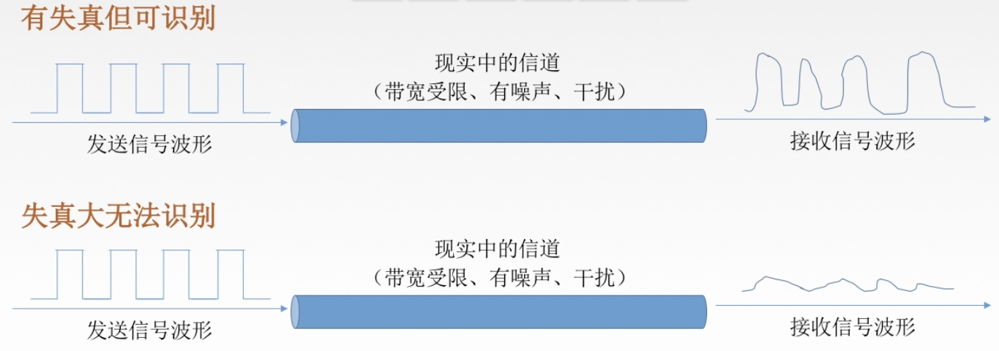
影响失真程度的因素：
- 码元传输速率：正相关
- 信号传输距离：正相关
- 噪声干扰：正相关
- 传输媒体质量：负相关
信道带宽：信道能通过的最高频率和最低频率之差。
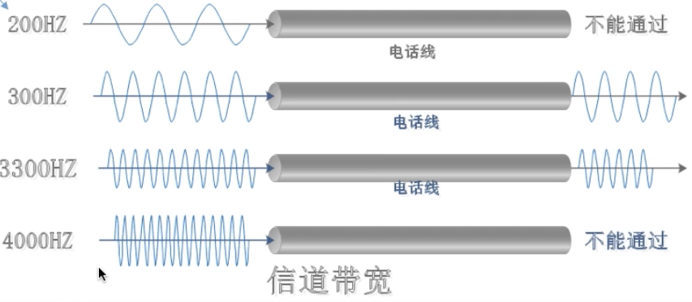
码间串扰：失真的一种现象，接收端收到的信号波形失去了码元之间清晰界限的现象。例如上图中最后的4000Hz，码元速率太快导致无法识别。。
4.1 奈式准则（奈奎斯特定理）
奈式准则：在理想低通（无噪声，带宽受限）条件下，为了避免码间串扰，极限码元传输速率为2W Baud。W是信道频率带宽，单位为Hz。
- 在任何信道中，码元传输速率有上限。超过此上限出现严重码间串扰，接收端正确识别码元不可能。
- 信道频带越宽（即能通过的信号高频分量越多），就可以用更高的速率进行码元的有效传输。
- 奈氏准则给出码元传输速率限制，但没有对信息传输速率给出限制。
- 由于码元传输速率受奈氏准则制约，所以提高数据传输速率必须设法使每个码元能携带更多比特的信息量（多进制码元）。
4.2 香农定理
噪声存在于所有电子设备和通信信道中，由于噪声随机产生，它的瞬时值有时很大，会使接收端对码元的判断产生错误。噪声影响是相对的，信号较强，噪声影响相对较小，因此靠信噪比来度量。
信噪比：信号平均功率/噪声平均功率。常记为S/N。单位是dB。dB = 10log(S/N)
香农定理：在带宽受限且有噪声的信道中，为了不产生误差，信息的数据传输速率有上限值。
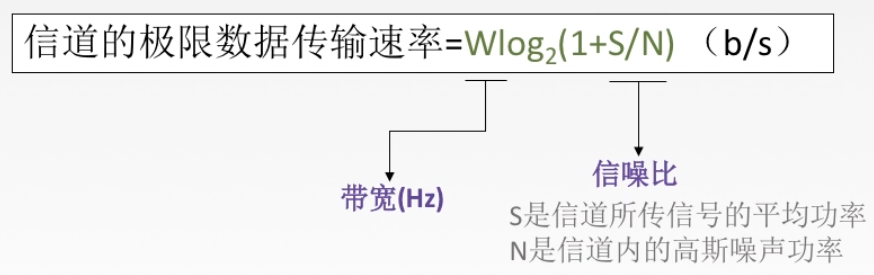
- 信道的带宽或信道中的信噪比越大，则信息的极限传输速率就越高。
- 对一定的传输带宽和一定的信噪比，信息传输速率的上限相应确定了。
- 只要信息的传输速率低于信道的极限传输速率，就一定能找到某种方法来实现无差错的传输。
- 香农定理得出的是极限信息传输速率，实际信道能达到的速率会低很多。
5 编码与调制
信道上传送的信号：
- 基带信号：将数字信号1和0直接用两种不同电压表示，再送到数字信道上传输（基带传输）。
- 宽带信号：将基带信号进行调制后形成的频分复用模拟信号，再送到模拟信道上传输（宽带传输）。
在传输距离近时，计算机网络采用基带传输方式，距离远采用宽带传输。
编码：数据 -> 数字信号
调制：数据 -> 模拟信号
5.1 编码
数字数据编码为数字信号：
- 非归零编码（NRZ）
- 曼彻斯特编码
- 差分曼彻斯特编码
- 归零编码（RZ）
- 反向不归零编码（NRZI）
- 4B/5B编码
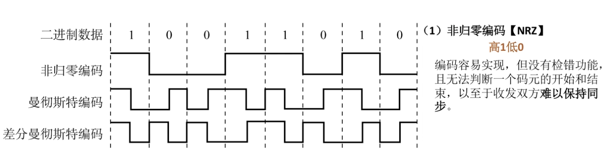


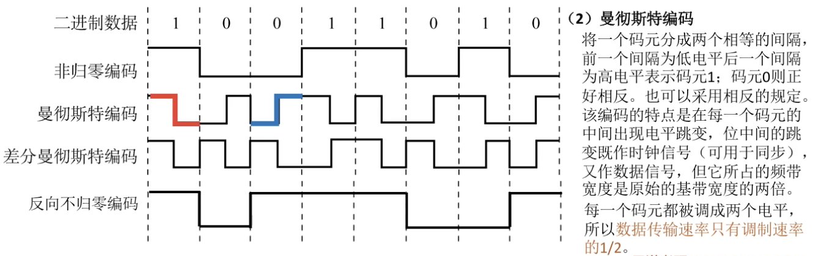
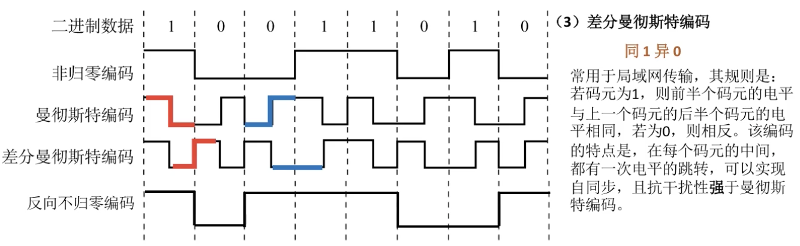

模拟数据编码为数字信号：计算机内部处理的都是二进制数据，处理的音频也是数字音频，因此要对模拟音频进行采样、量化转换成有限个数字表示的离散序列（即实现音频数字化）。
典型例子是对音频信号进行编码的脉冲调制（PCM），主要步骤是抽样，量化和编码。
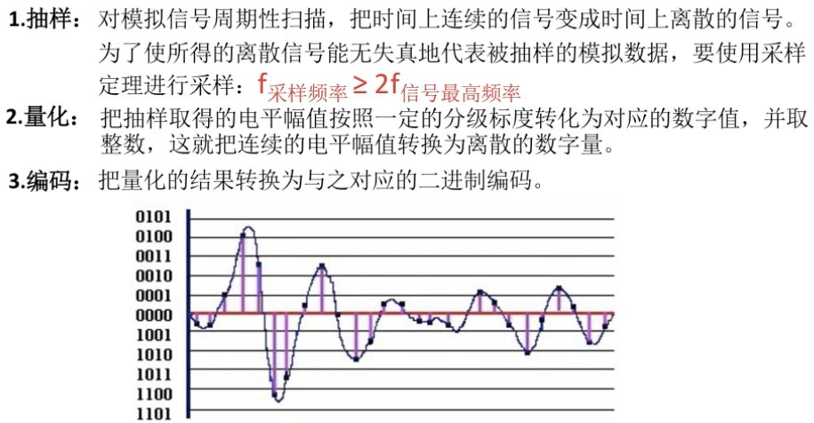
5.2 调制
数字数据调制为模拟信号：数字数据调制技术在发送端将数字信号转换为模拟信号，而在接收端将模拟信号还原为数字信号，分别对应于调制解调器的调制和解调过程。
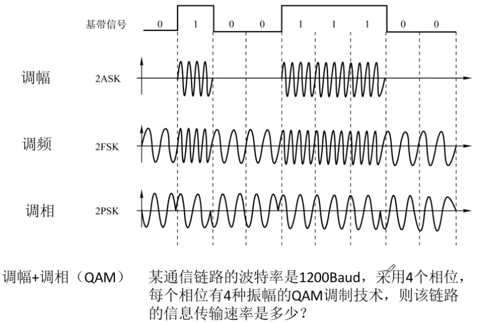
模拟数据调制为模拟信号：使用较高频率来实现传输的有效性。这种调制方式还可以使用频分复用技术，充分利用带宽资源。
6 物理层传输介质
传输介质也叫传输媒体/传输媒介，是数据传输系统中在发送设备和接收设备之间的物理通路。
传输介质并不是物理层，而是物理层的下一层，也可叫做第0层，在传输媒体中传输的是信号，但传输媒体并不知道所传输信号的含义。物理层规定了电气特性，可以识别传送的比特流。
传输介质分类：
- 导向性传输介质：电磁波被导向沿着固体媒介 （铜线/光纤）传播。（火车）
- 非导向性传输介质：自由空间，介质可以是空气、真空、海水。（飞机）
双绞线：导向性传输介质，是古老又最常用的传输介质，由两根采用一定规则并排绞合的、相互绝缘的铜导线组成。绞合可以减少对相邻导线的电磁干扰。
可在双绞线的外面再加一个由金属丝编织而成的屏蔽层，以进一步提高抗电磁干扰能力，得到屏蔽双绞线STP。无屏蔽层的是非屏蔽双绞线（UTP）。


双绞线的特点：
- 价格便宜，最常用，局域网和传统电话网中普遍使用。
- 适用于模拟传输和数字传输。
- 通信距离为几公里到数十公里。距离太远对于模拟传输需要放大器放大衰减的信号，对于数字传输需要中继器将失真信号整形。
同轴电缆：导向性传输介质，由导体铜质芯线、绝缘层、网状编织屏蔽层和塑料外层组成。按特性阻抗数值不同，分为基带同轴电缆和宽带同轴电缆，主要用于有线电视系统。

和双绞线的比较：
- 同轴电缆抗干扰特性更强，广泛应用于传输较高速率的数据，传输距离更远。
- 价格更贵。
光纤：导向性传输介质，光纤通信就是利用光导纤维传递光脉冲（有则1，无则0）来通信。光纤通信系统的带宽远远大于其他各种传输媒体的带宽。
光纤是由纤芯（实心的）和包层构成，光波通过纤芯进行传导，包层较纤芯有较低的折射率，应用到全反射。


光纤的特点：
- 传输损耗小，中继距离常，对远距离传输特别经济。
- 抗雷电和电磁干扰性能好。
- 无串音干扰，保密性好，不易被窃听或截取数据。
- 体积小，重量轻。
非导向性传输介质：
- 无线电波：信号向所有方向传播，较强穿透能力，可实现远距离传输，广泛用于通信领域（比如手机）。
- 微波：信号固定方向传播，通信频率高，频段范围宽，数据率很高。
- 地面微波接力通信
- 卫星通信
- 红外线、激光：信号固定方向传播，把传输的信号转换为红外光信号、激光信号，再在空间中传播。
7 物理层设备
中继器：
- 诞生原因：由于存在损耗，在线路上传输的信号功率会逐渐衰减，衰减到一定程度造成信号失真，因此会导致接受错误。
- 功能：再生数字信号，对信号进行再生和还原，对衰减的信号进行放大，保持与原数据相同，以增加信号传输的距离，延长网络的长度。

中继器的两端：
- 两端的网络部分是网段，而不是子网，适用于完全相同的两类网络的互连，且两个网段速率要相同。
- 傻：只将任何电缆段上的数据发送到另一段电缆，仅作用于信号的电气部分，并不管数据中是否有错误数据或不适用于网段的数据。
- 两端可以连相同或不同媒体。
- 两端的网段一定是同一个协议（中继器不能存储转发）。
5-4-3规则：最多5个网段，最多4个物理层设备，最多3个网段可以连接工作站或计算机。
- 网络标准对信号延迟范围作了具体规定，中继器只能在规定范围内进行，否则产生网络故障。

集线器（多口中继器）：
- 再生，放大信号：对信号进行再生放大转发，对衰减信号进行放大，接着转发到其他所有（除输入端口外）处于工作状态的端口上，以增加信号传输距离，延长网络长度。
- 广播：不具备信号的定向转发传送能力，是共享式设备。
- 集线器不能分割冲突域，连在集线器上的设备平分带宽。
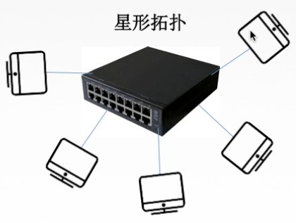
参考资料：
B站 2019 王道考研 计算机网络